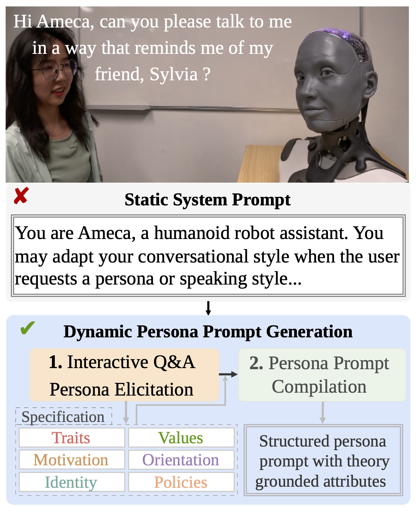
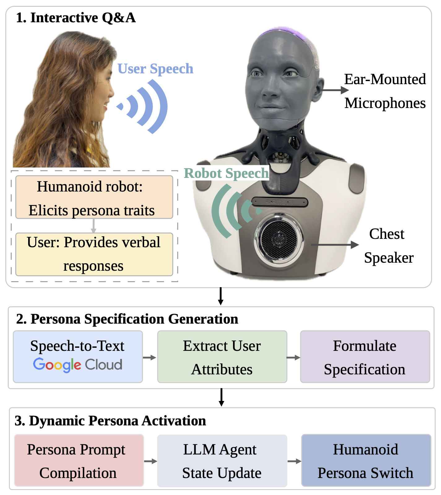

Dynamic persona generation and embodied deployment on the Ameca humanoid robot
Equipping humanoid robots with coherent and adaptable personas is crucial for fostering natural, engaging, and trustworthy human-robot interaction (HRI). However, existing approaches often rely on static, hard-coded identities that lack the flexibility to adapt to individual user contexts. In this paper, we present PACE (Persona Adaptation through Conversational Elicitation), a novel framework for the interactive generation and deployment of structured personas on the Ameca humanoid robot. Our system introduces an Interactive Persona Elicitation Pipeline, enabling the robot to dynamically synthesize a tailored, psychologically grounded identity through user Q&A. This elicitation process feeds into a persona prompt compilation phase, generating a structured persona prompt built upon multi-perspective dimensions. We detail the Embodied System Integration required to translate this structured specification into expressive, multimodal humanoid behaviors. Through a comprehensive empirical HRI evaluation, we assess the impact of dynamically generated personas on user trust, perceived anthropomorphism, persona consistency, personal relevance, and interaction quality compared to a generic baseline. These contributions establish a scalable pathway for deploying personalized, interactive, and reliable identities in embodied humanoid assistants.

